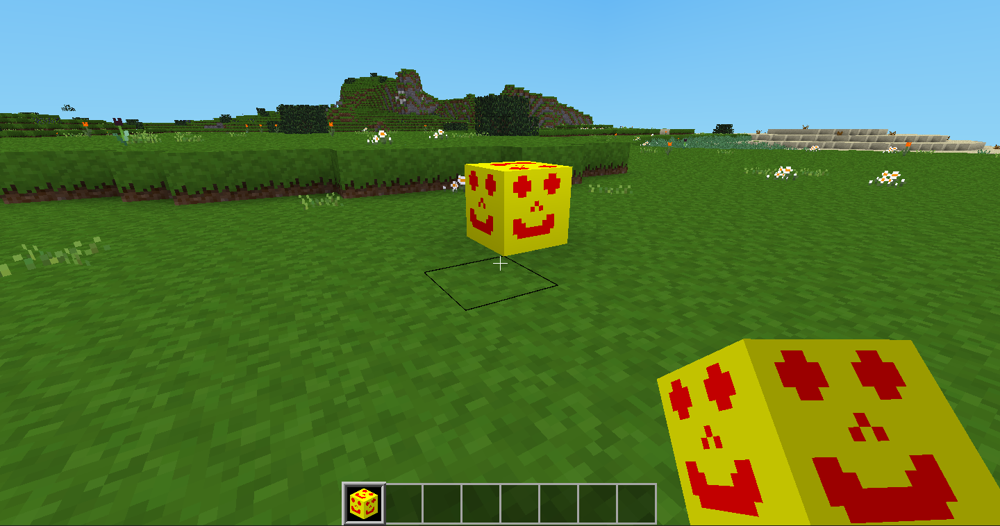

In Minetest you can dig dirt, stone, sand, tree trunks and so on. These blocks are called nodes.
Creating new nodes is pretty simple, so let's create one now! The steps are:
Here's an image you could use.
If you're reading this in a web browser, you can probably right-click the image and select Save image as..., or something similar to that.
Alternatively, you could borrow an image from another mod, or create your own image in a graphics application.
By convention, the name of the image file should include the name of the mod. These are good names for images.
hello_happy.png
hello_dirt.png
hello_diamond_sword.png
Images are normally 16 pixels (dots) high and 16 pixels wide. Some mods might use larger images, perhaps 32x32, 64x64 or even larger, but too many large images may make the game run slowly.
Inside your hello folder, create another folder called textures. All of your images will be placed inside this folder (so don't choose a different folder name).
It's possible to create a different sound effect for every new node, but most of the time we'll just re-use the sound effects provided by minetest-game.
minetest-game is a collection of mods. One of those mods, called default, contains lots of sound effects.
We need to tell Minetest to start default before it starts your mod, otherwise default's sound effects won't be available to your mod.
To do this, create a new file inside your hello folder called mod.conf. Open it in a text editor, copy-and-paste this text into it, and then save your changes.
name = hello
description = My first mod
depends = default
These lines should be easy to understand. The first line provides the name of the mod. The mod and its folder should usually have the same name.
The second line is optional, but recommended. You can replace My first mod with any text you like.
The third line is the one that tells Minetest to start default before it starts your mod.
Finally, open your init.lua file, and copy and paste this code into it. We'll talk about how it works in the next chapter.
minetest.register_node("hello:happy_block", {
description = "A Very Happy Block",
tiles = {"hello_happy.png"},
groups = {cracky = 3},
sounds = default.node_sound_stone_defaults(),
})
Start a game in creative mode. The new node should be visible in your inventory,

If you can place the node in the game world, and then dig it up again, you're ready to move on to the next chapter!